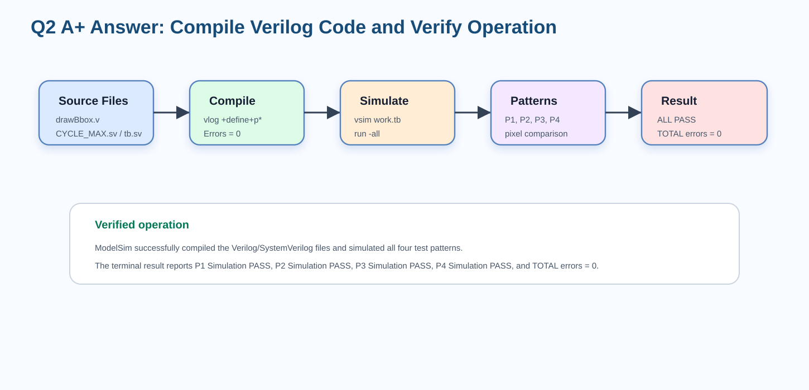
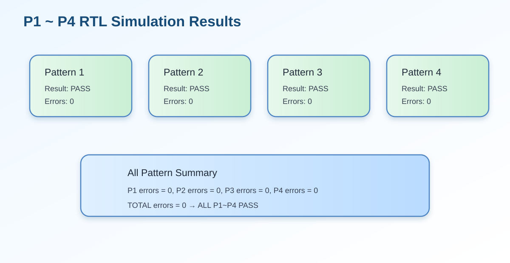
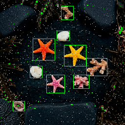
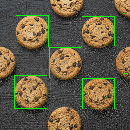
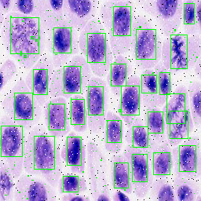

1. 題目要求與本題重點
Original requirement: Compile the verilog code to verify the operations of this module works properly.
本題要求不是只說「有編譯」，而是要證明 Verilog/SystemVerilog 檔案能成功 compile，且模組在 testbench 中能正常運作。對 Lab7 而言，正確的驗證方式是使用 ModelSim 編譯 drawBbox.v、CYCLE_MAX.sv、tb.sv 與測試檔，接著執行 P1～P4 simulation，最後確認每個 pattern 的 pixel comparison 都通過。
2. A+ 英文回答（可直接貼報告）
The Verilog/SystemVerilog source files were compiled and verified using ModelSim. The compiled files include the main RTL module drawBbox.v, the cycle definition file CYCLE_MAX.sv, the testbench tb.sv, and the full pattern testbench. The compilation completed successfully with 0 errors, indicating that the RTL source code, module declarations, and testbench connections were syntactically correct and could be elaborated by the simulator.
After compilation, the simulation was executed for all four test patterns. The design successfully completed the full image-processing pipeline for each pattern, including RGB loading, grayscale conversion, Gaussian filtering, Otsu thresholding, mask generation, 8-connected CCL, bounding-box extraction, and final green bounding-box overlay writing. The terminal results show that Pattern 1, Pattern 2, Pattern 3, and Pattern 4 all passed the simulation. The total number of errors was 0, proving that the module operates correctly in the system and produces pixel-perfect output compared with the golden reference.
3. 中文說明版（報告說明可用）
本設計已使用 ModelSim 完成 Verilog 程式編譯與功能模擬驗證。編譯檔案包含 drawBbox.v、CYCLE_MAX.sv、tb.sv 與完整測試檔。編譯結果顯示 Errors = 0，代表程式語法、模組宣告與 testbench 連接皆正確。接著執行 P1～P4 四組 pattern 模擬，結果全部顯示 Simulation PASS，且 P1、P2、P3、P4 的錯誤數皆為 0。因此可以確認本模組不只成功編譯，也能在 testbench 系統中正確完成影像處理與 bounding box 輸出。
4. Compile and Simulation Flow 圖解

5. ModelSim 指令與驗證方式
本次驗證流程可分成 compile 與 simulate 兩個階段。Compile 階段使用 vlog 讀入 RTL 與 testbench；simulate 階段使用 vsim 載入 work.tb 並 run -all 執行完整測試。
vlog -reportprogress 300 "+define+p2" drawBbox.v CYCLE_MAX.sv tb.sv tb_all_p1_p4_full.sv
vsim -c -suppress 12023,3015 work.tb -do "run -all; quit -sim"6. Terminal Result 摘要
# vlog -reportprogress 300 "+define+p2" drawBbox.v CYCLE_MAX.sv tb.sv tb_all_p1_p4_full.sv
# -- Compiling module drawBbox
# -- Compiling module tb
# -- Compiling module RGBMEM
# Top level modules:
# tb
# Errors: 0, Warnings: 4
# Running Pattern 1
# P1 Simulation PASS!!
# Running Pattern 2
# P2 Simulation PASS!!
# Running Pattern 3
# P3 Simulation PASS!!
# Running Pattern 4
# P4 Simulation PASS!!
# P1 errors = 0
# P2 errors = 0
# P3 errors = 0
# P4 errors = 0
# TOTAL errors = 0
# ALL P1~P4 PASS!!
# Time: 24011725 ns
7. 結果表格整理
| 項目 | 結果 | 說明 |
|---|---|---|
| Compile status | PASS | ModelSim 成功編譯所有 Verilog/SystemVerilog 檔案。 |
| Compile errors | 0 | 無語法錯誤或無法 elaboration 的錯誤。 |
| Warnings | 4 | 主要為 module overwrite 類型警告，不影響本次 simulation pass。 |
| Top module | tb | testbench 成功載入 drawBbox 與 RGBMEM。 |
| Pattern 1 | PASS, errors = 0 | 輸出與 golden reference 完全一致。 |
| Pattern 2 | PASS, errors = 0 | 輸出與 golden reference 完全一致。 |
| Pattern 3 | PASS, errors = 0 | 輸出與 golden reference 完全一致。 |
| Pattern 4 | PASS, errors = 0 | 輸出與 golden reference 完全一致。 |
| Total errors | 0 | ALL P1～P4 PASS。 |
| Simulation time | 24011725 ns | 完整 P1～P4 模擬完成時間。 |
8. 為什麼這可以證明模組正常？
Lab7 的輸出是 256×256 影像，因此 testbench 會逐 pixel 比對輸出結果與 golden reference。若 bounding box 座標錯誤、綠色邊界偏移、memory write timing 錯誤、mask/CCL 錯誤或 RGB 保留錯誤，都會造成 pixel mismatch。因此 P1～P4 的 errors 全部為 0，代表整個 pipeline 從輸入到輸出都正確。
9. 與 RTL 設計對應的 Verilog Code
FSM State 定義
output reg [31:0] Ans_D, // AnsSRAM 寫入資料
output reg [15:0] Ans_A // AnsSRAM address
);
// ============================================================
// 常數定義
// ============================================================
localparam [31:0] GREEN = 32'h0000_FF00; // bounding box 使用的綠色常數
localparam integer IMG_W = 256; // 影像寬度
localparam integer IMG_H = 256; // 影像高度
localparam integer NPIX = 65536; // 總 pixel 數 = 256 * 256
localparam integer MAX_LABELS = 4096; // CCL 最多允許的 provisional labels 數量
// ============================================================
// FSM 狀態定義
// ============================================================
// 整個影像處理流程以 FSM 依序執行，每個 state 負責一個處理階段。
localparam [5:0]
S_IDLE = 6'd0, // 等待 enable
S_LOAD = 6'd1, // 從 ImgROM 讀入整張 RGB 影像
S_GRAY = 6'd2, // RGB 轉 grayscale
S_HIST_CLEAR = 6'd3, // 清除 histogram
S_GAUSS_HIST = 6'd4, // Gaussian filter 並建立 histogram
S_OTSU_INIT = 6'd5, // Otsu threshold 初始化
S_OTSU_SCAN = 6'd6, // 掃描 0~255 找最佳 threshold
S_COUNT_HI = 6'd7, // 統計大於 threshold 的 pixel 數量
S_POLARITY = 6'd8, // 判斷是否需要 foreground/background 反轉
S_MASK_WRITE = 6'd9, // 產生 binary mask，並寫入 UrSRAM
S_PARENT_INIT = 6'd10, // 初始化 union-find parent 與 bbox 暫存
S_CCL_SCAN = 6'd11, // Connected Component Labeling 第一階段
S_BBOX_INIT = 6'd12, // 初始化 bounding box 資料
S_BBOX_SCAN = 6'd13, // 掃描 label 結果並計算 bbox
S_BOXMAP_CLEAR = 6'd14, // 清除 box_map
S_BOXMAP_GEN = 6'd15, // 根據 bbox 座標產生要畫綠框的位置
S_DRAW_WRITE = 6'd16, // 將原圖或綠框 pixel 寫入 AnsSRAM
S_DONE = 6'd17; // 完成
// FSM current state
reg [5:0] state;
// done_r 是 done 的暫存版本
reg done_r;done 完成狀態
S_BBOX_INIT = 6'd12, // 初始化 bounding box 資料
S_BBOX_SCAN = 6'd13, // 掃描 label 結果並計算 bbox
S_BOXMAP_CLEAR = 6'd14, // 清除 box_map
S_BOXMAP_GEN = 6'd15, // 根據 bbox 座標產生要畫綠框的位置
S_DRAW_WRITE = 6'd16, // 將原圖或綠框 pixel 寫入 AnsSRAM
S_DONE = 6'd17; // 完成
// FSM current state
reg [5:0] state;
// done_r 是 done 的暫存版本
reg done_r;
assign done = done_r;
// ============================================================
// 影像與中間結果記憶體
// ============================================================
reg [31:0] rgb_mem [0:NPIX-1]; // 儲存原始 RGB pixel
reg [7:0] gray_mem [0:NPIX-1]; // 儲存灰階結果
reg [7:0] gauss_mem [0:NPIX-1]; // 儲存 Gaussian filter 後結果
reg mask_mem [0:NPIX-1]; // binary mask：1=foreground，0=background
reg box_map [0:NPIX-1]; // 標記哪些 pixel 要被畫成綠框
reg [11:0] label_mem [0:NPIX-1]; // CCL label map
// grayscale histogram，灰階值 0~255 各自的 pixel 數
reg [31:0] hist [0:255];
// ============================================================
// CCL / Union-Find / Bounding Box 相關暫存
// ============================================================
reg [11:0] parent [0:MAX_LABELS-1]; // union-find parent table
reg bbox_valid [0:MAX_LABELS-1]; // 該 label 是否有效
reg bbox_border [0:MAX_LABELS-1]; // 該 component 是否碰到影像邊界
reg [7:0] bbox_xmin [0:MAX_LABELS-1]; // bbox 最小 x
reg [7:0] bbox_xmax [0:MAX_LABELS-1]; // bbox 最大 x
reg [7:0] bbox_ymin [0:MAX_LABELS-1]; // bbox 最小 y
reg [7:0] bbox_ymax [0:MAX_LABELS-1]; // bbox 最大 y10. Testbench / Cycle 對應片段
tb.sv 驗證邏輯片段
.Ur_WEN(Ur_WEN),
.Ur_D(Ur_D),
.Ur_A(Ur_A),
//AnsSRAM
.Ans_Q(Ans_Q),
.Ans_CEN(Ans_CEN),
.Ans_WEN(Ans_WEN),
.Ans_D(Ans_D),
.Ans_A(Ans_A)
);
task terminal_result;
begin
err =0;
for(i=0;i<total_result_pixels;i=i+1)begin
if(ANS[i] !== AnsSRAM.memory[i] )begin
err++ ;
$write("Result[%0d][%0d], your answer:%08h, correct answer:%08h\n", i/width,i%width, AnsSRAM.memory[i], ANS[i]);
end
end
error_pixels=0;
if(err == 0)begin
$display("\n");
$display("\n");
$display(" **************************** ");
$display(" ** ** |\__|| ");
$display(" ** Congratulations !! ** / O.O | ");
$display(" ** ** /_____ | ");
$display(" ** Simulation PASS!! ** /^ ^ ^ \\ |");
$display(" ** ** |^ ^ ^ ^ |w| ");
$display(" **************************** \\m___m__|_|");
$display("\n");
`ifdef p4
$display("\n");
$display("\n");
$display("\n");
$display(" FINALLY TIME TO SLEEP!!!!!!!!!!!!!!!!");
$display(" _____|~~\_____ _____________");
$display(" _-~ \\ | \\");
$display(" _- | ) \\ |__/ \\ \\");
$display(" _- ) | | | \\ \\");
$display(" _- | ) / |--| | |");
$display(" __-_______________ /__/_______| |_________");
$display(" ( |---- | |");
$display(" `---------------'--\\\\ .`--'");
$display(" `||||");
`endif
$display("\n");
$display("-------------------------------------------------------------");
end
else begin
$display("-------------------------------------------------------------");
$display("\n");
$display(" **************************** ");
$display(" ** ** |\__|| ");
$display(" ** OOPS!! ** / X,X | ");
$display(" ** ** /_____ | ");
$display(" ** Simulation Failed!! ** /^ ^ ^ \\ |");
$display(" ** ** |^ ^ ^ ^ |w| ");
$display(" **************************** \\m___m__|_|");
$display(" Totally has %d errors ", err);
$display("\n");CYCLE_MAX.sv 片段
`define CYCLE_TIME 10.0 // ns, modify according to your design
`define MAX_CYCLE 600000000 // modify if needed11. 輸出圖片結果（外部載入）




12. 最終精簡版答案
The Verilog code was compiled and verified using ModelSim. The main RTL file drawBbox.v, the cycle definition file CYCLE_MAX.sv, the testbench tb.sv, and the full P1–P4 testbench were successfully compiled with 0 errors. After compilation, the simulation was executed for all four patterns. The terminal results show that P1, P2, P3, and P4 all passed, and the total number of errors was 0. This confirms that the module operates correctly in the system and produces pixel-perfect output compared with the golden reference.